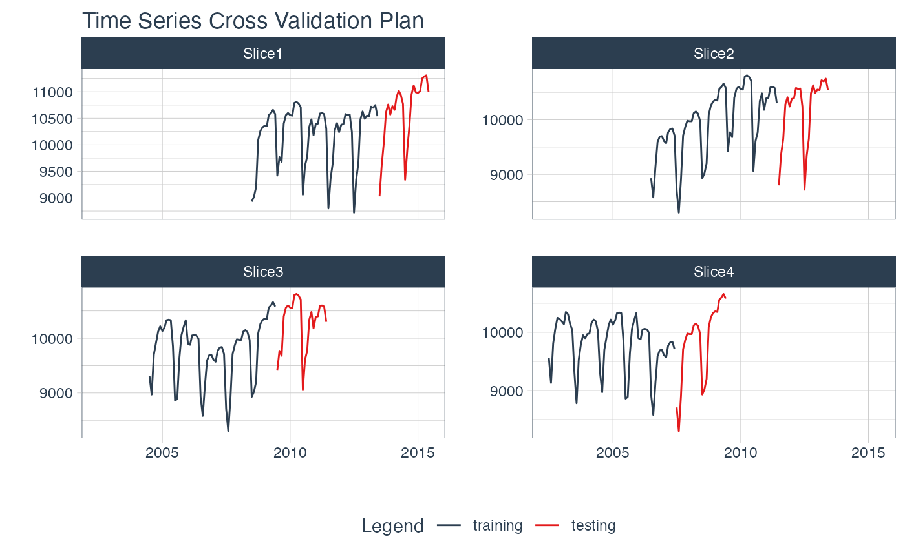

These resampling tools are exported from the timetk package.
timetk::time_series_cv(): Creates resample sets using time series cross validationtimetk::time_series_split(): Makes an initial time series splittimetk::plot_time_series_cv_plan(): Plots a cross validation plantimetk::tk_time_series_cv_plan(): Unnests a cross validation plan
Examples
# Generate Time Series Resamples
resamples_tscv <- time_series_cv(
data = m750,
assess = "2 years",
initial = "5 years",
skip = "2 years",
slice_limit = 4
)
#> Using date_var: date
resamples_tscv
#> # Time Series Cross Validation Plan
#> # A tibble: 4 × 2
#> splits id
#> <list> <chr>
#> 1 <split [60/24]> Slice1
#> 2 <split [60/24]> Slice2
#> 3 <split [60/24]> Slice3
#> 4 <split [60/24]> Slice4
# Visualize the Resample Sets
resamples_tscv %>%
tk_time_series_cv_plan() %>%
plot_time_series_cv_plan(
date, value,
.facet_ncol = 2,
.interactive = FALSE
)
